지게차가 컨테이너 안까지 그대로 올라갑니다
도크가 없는 창고와 야적장에서 쓰는 이동식 도크입니다. 기본형과 2단 분리형, 6톤부터 15톤까지 있고, 수동 유압으로 차 바닥 높이(1.1~1.7m)에 맞춥니다.
기본형과 2단 분리형, 두 가지가 있습니다
쓰는 방법은 같습니다. 받아서 놓는 방식과 보관이 다릅니다.
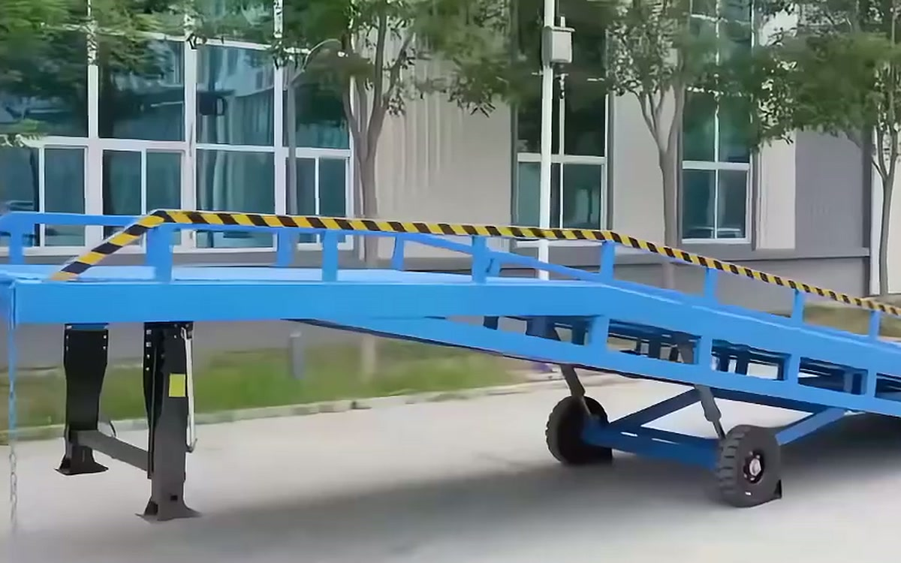
기본형
경사와 받침이 한 몸으로 된 일체형입니다. 내려놓고 유압으로 높이만 맞추면 바로 씁니다.
- 조립 없이 바로 사용
- 한곳에 두고 계속 쓰는 현장에
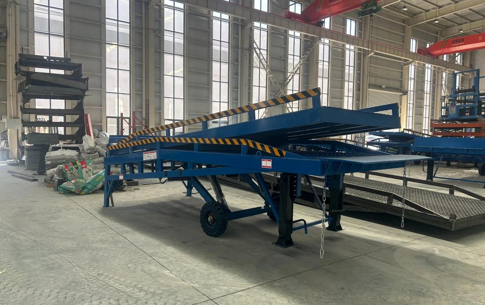
2단 분리형
경사 부분과 받침 부분이 나뉘어 옵니다. 현장에서 지게차로 맞붙여 씁니다.
- 두 토막으로 나눠 운반·보관
- 지게차 한 대로 현장 조립
높이는 수동 유압으로 올립니다
손잡이를 저으면 유압 실린더가 도크를 밀어 올립니다. 전기도 배터리도 쓰지 않습니다.
- 전기가 필요 없는 수동 유압 펌프전기가 없는 야적장에서도 그대로 씁니다.
- 손잡이를 저으면 유압으로 올라갑니다한 사람이 손으로 올리고 내립니다.
- 차 바닥 높이 1.1~1.7m에 맞춥니다컨테이너, 탑차, 화물차 높이에 맞게 조절합니다.
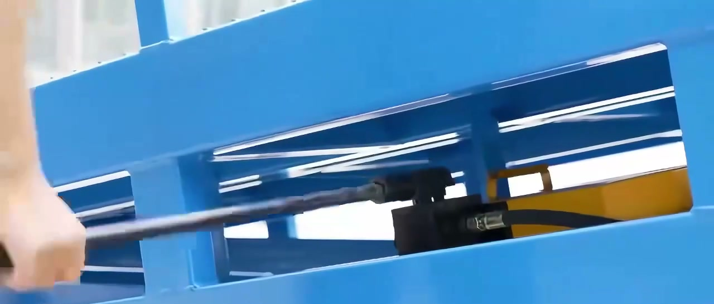
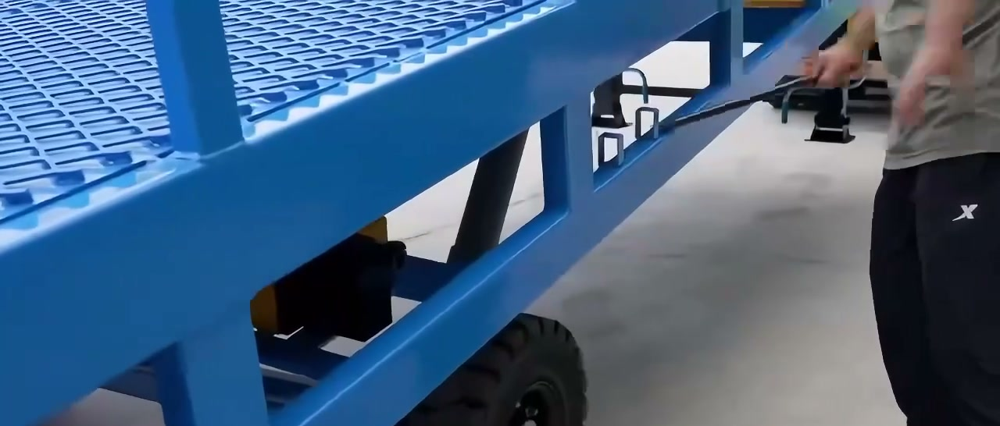
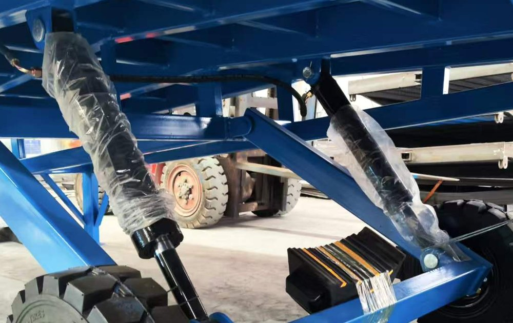
몇 톤이 필요하세요?
지게차 무게와 한 번에 싣는 짐 무게를 더한 값보다 큰 톤수를 고르면 됩니다. 숫자를 누르면 규격이 바뀝니다.
폭 2.2m. 높이는 수동 유압 펌프로 맞춥니다.
DCQY-10T
10톤
3톤 지게차 작업에 맞습니다
예: 지게차 4.3톤 + 짐 3톤 = 7.3톤. 여유를 두고 고르는 규격입니다.
- 올릴 수 있는 무게10톤
- 유압 높이 조절1.1 ~ 1.7m
- 크기 (길이×폭×높이)11.15 × 2.2 × 1.1m
- 본체 무게2,400kg
- 올리는 방식수동 유압 펌프 (전기 필요 없음)
톤수 계산해 보기
지게차 제원표에 있는 자체 중량을 넣으세요.
기본형은 대고, 올리고, 바로 씁니다
기본형을 실제로 쓰는 순서입니다. 2단 분리형도 맞붙인 뒤에는 똑같이 씁니다.
- 차 뒤에 맞춰 댑니다바퀴가 달려 있어 지게차로 끌어서 자리를 잡습니다.
- 수동 유압 펌프로 높이를 올립니다손잡이를 저으면 유압으로 올라갑니다. 전기는 필요 없습니다.
- 걸침판을 걸고 체인으로 묶습니다도크와 차가 벌어지지 않게 잡아 줍니다.
- 지게차로 오르내립니다컨테이너 안까지 그대로 들어갑니다.
두 토막으로 나눠 옮기고, 현장에서 맞붙입니다
2단 분리형은 경사 부분과 받침 부분이 따로 옵니다. 지게차 한 대로 들어서 끼우면 끝납니다. 아래는 실제 조립 영상입니다.
- 받침 부분을 세웁니다바퀴와 다리가 달린 쪽을 놓을 자리에 둡니다.
- 경사 부분을 지게차로 듭니다포크로 떠서 받침 쪽으로 가져갑니다.
- 연결부에 끼워 내립니다두 토막이 맞물리면 핀으로 고정합니다.
- 유압으로 높이를 맞추고 씁니다수동 유압 펌프로 차 바닥 높이에 맞춥니다.
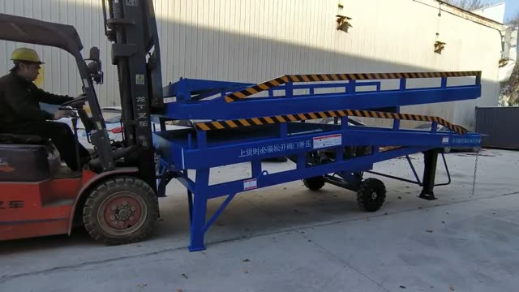
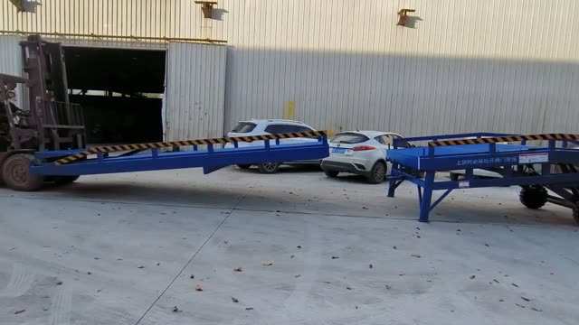
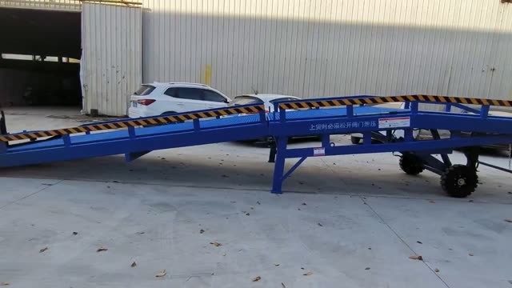
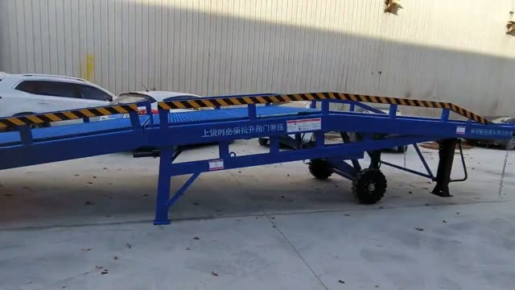
현장에서 따져 보는 열 가지
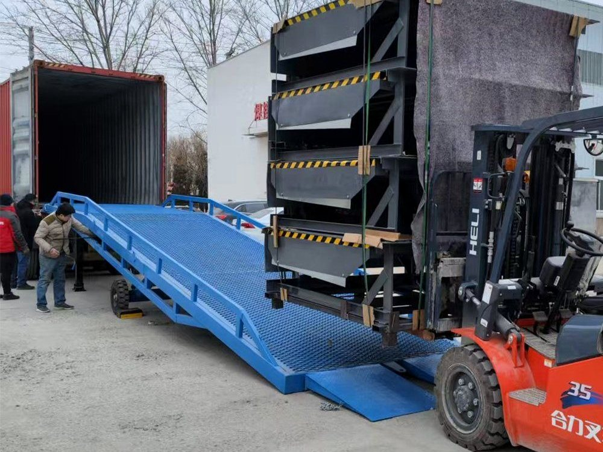
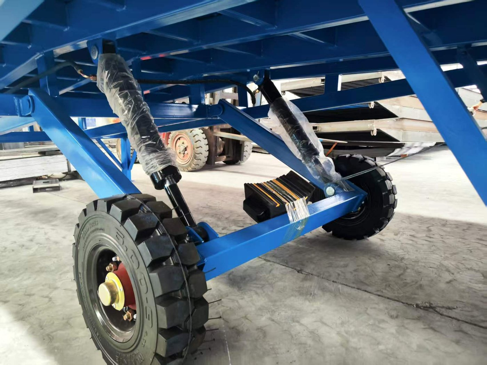
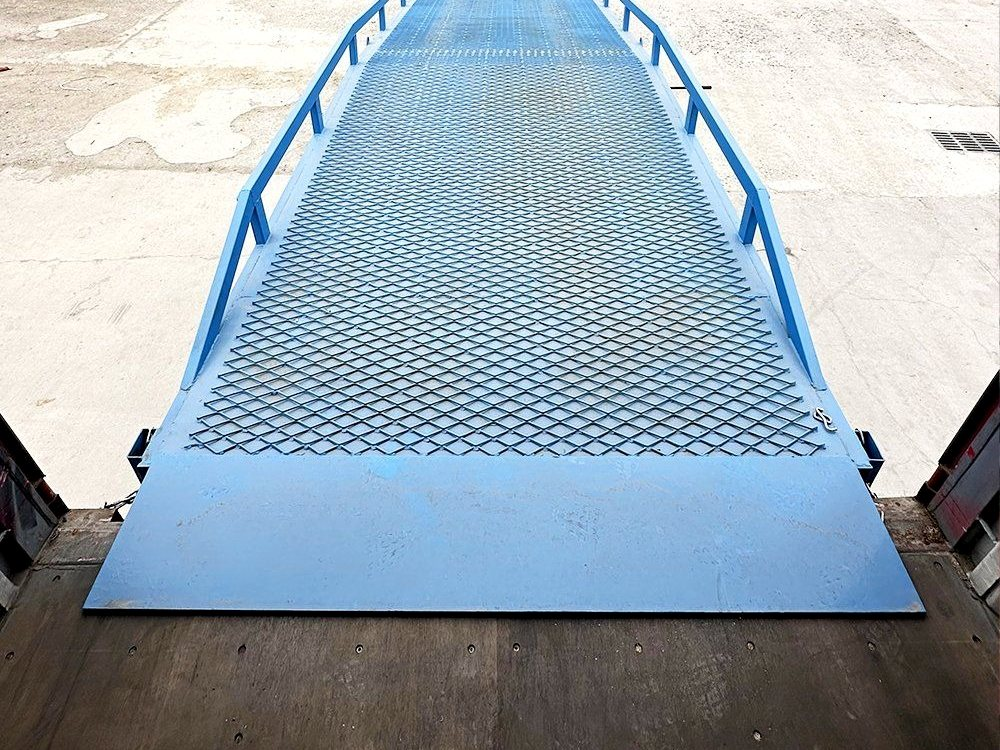
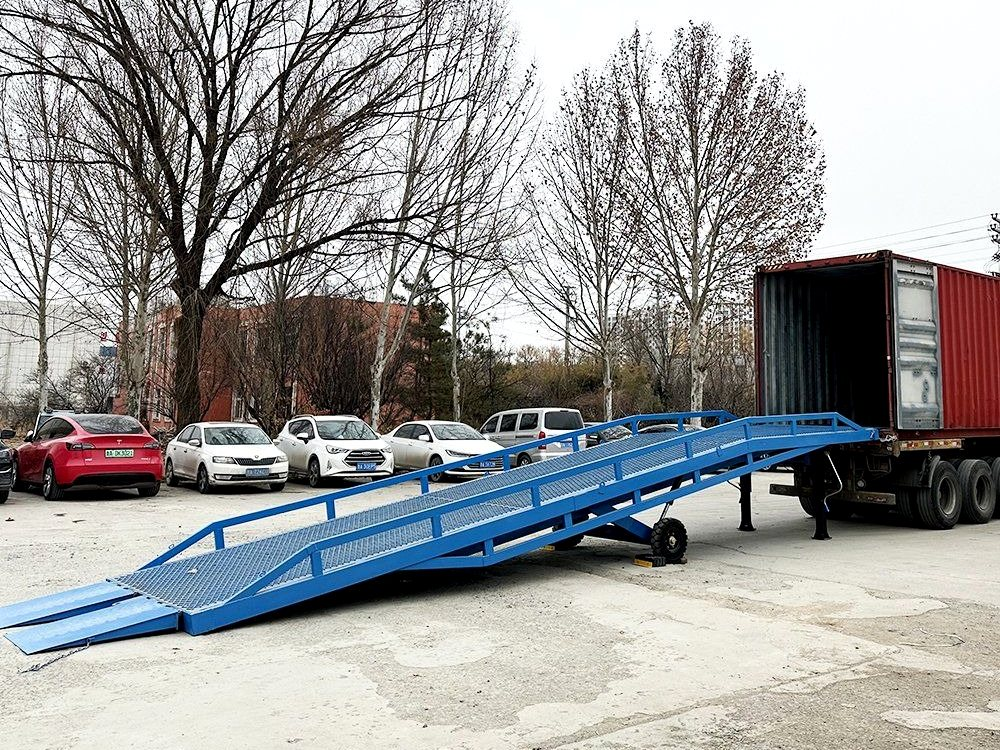
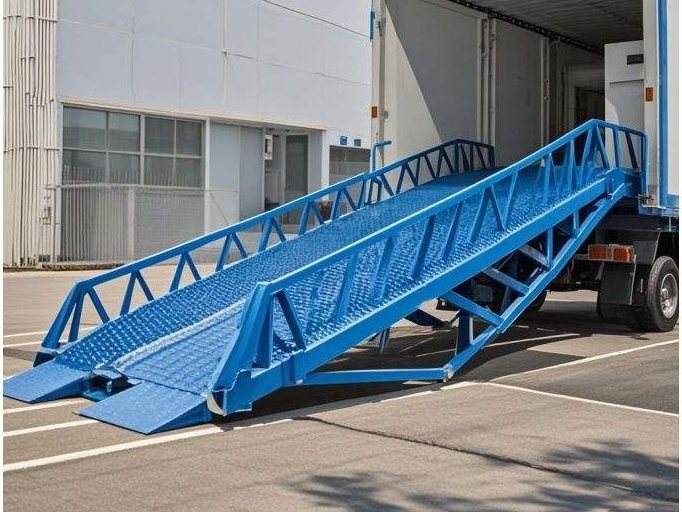
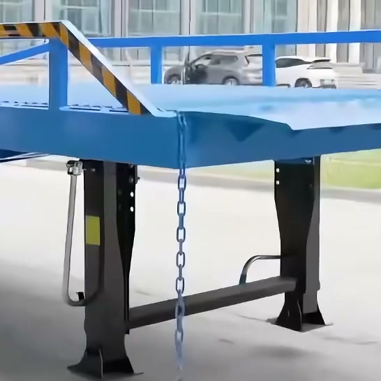
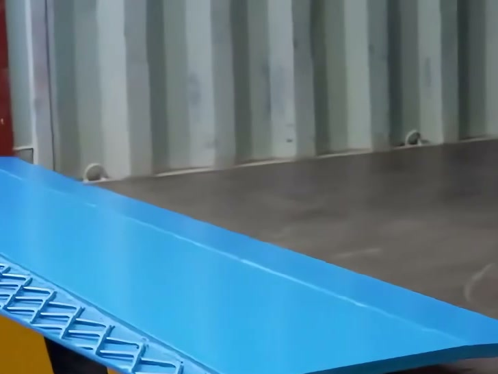
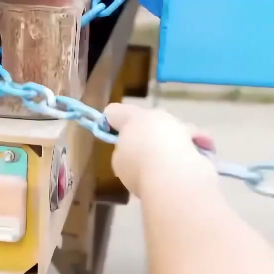
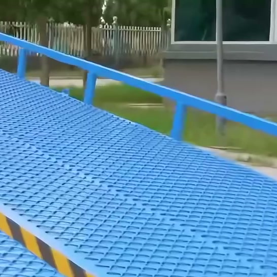
톤수별 규격표
| 톤수 | 모델 | 유압 높이 조절 | 크기 (길이×폭×높이) | 본체 무게 | 올리는 방식 |
|---|
폭 2.2m 사양 기준입니다. 본체 무게는 사양에 따라 조금 달라질 수 있고, 길이·난간은 주문할 때 바꿀 수 있습니다.
자주 묻는 질문
전기가 없는 야적장에서도 쓸 수 있나요?
네. 손으로 젓는 유압 펌프로 높이를 올리고 내리기 때문에 전기가 필요 없습니다.
몇 톤을 골라야 할지 모르겠습니다.
지게차 자체 무게에 한 번에 싣는 짐 무게를 더하세요. 그 값보다 큰 톤수 중에서 여유 있는 쪽을 고릅니다. 위쪽 계산기에 넣어 보시거나, 지게차 모델명을 알려 주시면 골라 드립니다.
기본형과 2단 분리형은 무엇이 다른가요?
기본형은 한 몸으로 되어 있어 내려놓으면 바로 씁니다. 2단 분리형은 경사 부분과 받침 부분이 나뉘어 있어 운반과 보관이 쉽고, 현장에서 지게차로 맞붙여 씁니다. 쓰는 방법은 둘이 같습니다.
길이나 폭을 바꿔서 주문할 수 있나요?
가능합니다. 현장 폭, 차 종류, 지게차 크기를 알려 주시면 맞는 치수로 견적을 드립니다.
옮길 때는 어떻게 하나요?
바퀴가 달려 있어 지게차로 끌어서 옮깁니다. 고정 공사는 하지 않습니다.